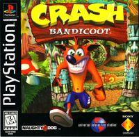
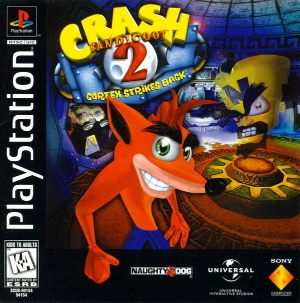
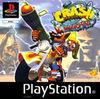
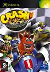
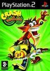
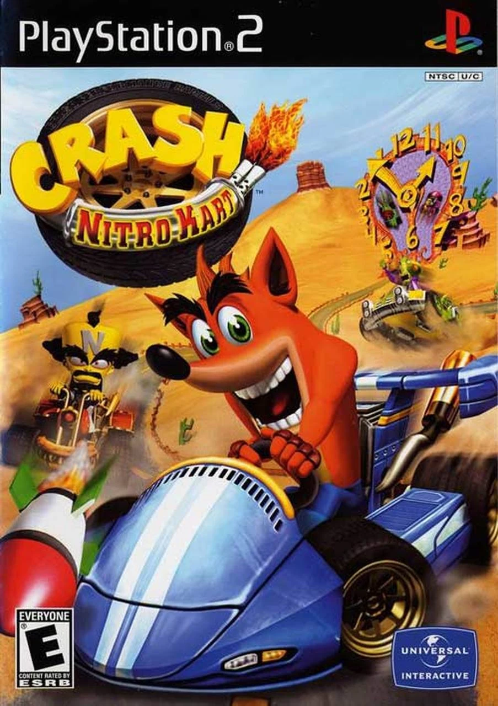
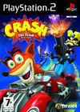
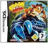

Tabla de posiciones


Andres Felipe Sepulveda Gaona
Andres Felipe Sepulveda Gaona| EQUIPO | PARTIDOS | PUNTOS | ESCUDO |
|---|---|---|---|
| Brasil | 14 | 5 |
|
| Momos | 10 | 2 |
|
| La Grasa | 20 | 1 |
|
| Legion Holk | 10 | 5 |
|
| Batalla de momos | |||
| PELICULA | PERSONAJE | VALORACION | IMAGEN |
|---|---|---|---|
| BLADE RUNNER 2049 | K | 4.0 |

|
| DRIVE | DRIVER | 3.9 |

|
| BARBIE | KENS | 3.2 |

|
| THE BELIEVER | DANNY BALINT | 3.2 |

|
| TITANES. HICIERON HISTORIA | ALAN BOSLEY | 3.9 |

|
| Top basado en: | |||
| Paginas de internet | |||
| Opinion personal | |||
| JUEGO | AÑO DE SALIDA | PLATAFORMA | VALORACION WEB | GENERO | IMAGEN |
|---|---|---|---|---|---|
| Crash Bandicoot | 1996 | PSX | N/A | Plataformas / Plataformas 3D |  |
| Crash Bandicoot 2: Cortex Strikes Back | 1997 | PSX | N/A | Acción / Plataformas 3D |  |
| Crash Bandicoot 3: Warped (Plataformas / Plataformas 3D) PSX · Año 1998 | 1998 | PSX | N/A | Plataformas / Plataformas 3D |  |
| Crash Bandicoot: Team Racing | 2003 | PS2 GCN GBA XBOX | 7 | Karts / Velocidad |  |
| Crash Twinsanity | 2004 | PS2 XBOX | N/A | Plataformas / Plataformas 3D |  |
| Crash Nitro Kart | 2004 | PS2 XBOX | N/A | Karts / Velocidad |  |
| Crash Tag Team Racing | 2005 | PS2 GCN XBOX NDS | N/A | Acción / Karts |  |
| Crash: Lucha de Titanes | 2007 | GBA NDS WII PS2 X360 PSP | 7 | Beat'em up / Plataformas 3D |  |
| Crash Guerra al coco-maniaco | 2008 | X360 WII PS2 PSP NDS | N/A | Plataformas / Plataformas 3D |

|
| Info sacada de: | |||||
| Paginas de internet | |||||
| Conocimiento personal | |||||
| Vandal | |||||